ЗАДНЕЕ СИДЕНЬЕ № 1 В СБОРЕ (для моделей с раздельным сиденьем типа 60/40 с функцией облегчения посадки "Walk In" с левой стороны) > ПОВТОРНАЯ СБОРКА |
| 1. УСТАНОВИТЕ РУЧКУ РЕГУЛИРОВКИ НАПРАВЛЯЮЩИХ ЛЕВОГО ЗАДНЕГО СИДЕНЬЯ |
| 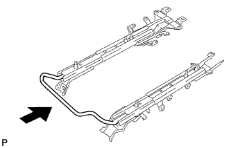 |
Установите ручку.
| 2. УСТАНОВИТЕ КАРКАС ПОДУШКИ ЛЕВОГО ЗАДНЕГО СИДЕНЬЯ В СБОРЕ |
Установите раму подушки сиденья и закрепите ее 6 гайками.
| 3. УСТАНОВИТЕ РАМУ СПИНКИ ЛЕВОГО ЗАДНЕГО СИДЕНЬЯ В СБОРЕ |
| 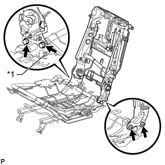 |
Временно закрепите раму спинки сиденья 2 болтами и 2 болтами "TORX".
Вверните болт в болтовое отверстие ремня безопасности.
| *1 | Установочный болт ремня безопасности |
Затяните 2 болта "TORX" с помощью торцевого ключа "TORX" T45.
Затяните 2 болта.
Выверните болт из болтового отверстия ремня безопасности.
| 4. УСТАНОВИТЕ ЛЕВЫЙ РЫЧАГ ФИКСАЦИИ СПИНКИ ЗАДНЕГО СИДЕНЬЯ В СБОРЕ |
Установите рычаг и закрепите его 2 гайками.
| 5. УСТАНОВИТЕ ТРОС УПРАВЛЕНИЯ НАКЛОНОМ ЗАДНЕГО СИДЕНЬЯ № 2 |
Установите трос на раму сиденья.
Закрепите 3 зажима троса и подсоедините трос.
| 6. ТРОС УПРАВЛЕНИЯ НАКЛОНОМ ЗАДНЕГО СИДЕНЬЯ |
Установите трос на раму сиденья.
Закрепите 3 зажима троса и подсоедините трос.
Установите 4 новых бандажа жгута.
| 7. УСТАНОВИТЕ ЛЕВЫЙ 3-ТОЧЕЧНЫЙ РЕМЕНЬ БЕЗОПАСНОСТИ СИДЕНЬЯ № 1 В СБОРЕ |
| 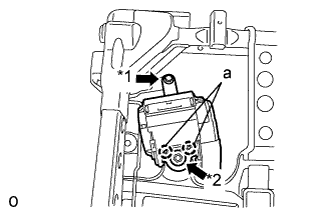 |
Совместите захваты с установочными отверстиями ремня безопасности и установите устройство вытяжения ремня безопасности, закрепив его гайкой и болтом, как показано на рисунке.
| *1 | Болт |
| *2 | Гайка |
| 8. УСТАНОВИТЕ НАПРАВЛЯЮЩУЮ ПЛЕЧЕВОГО КРЕПЛЕНИЯ РЕМНЯ ЗАДНЕГО СИДЕНЬЯ |
Введите в зацепление направляющую и захват, чтобы закрепить направляющую ремня.
| 9. УСТАНОВИТЕ ПРУЖИННЫЙ АМОРТИЗАТОР ПОДУШКИ ЗАДНЕГО СИДЕНЬЯ |
Установите амортизатор и закрепите его 2 гайками.
| 10. УСТАНОВИТЕ ВНУТРЕННЮЮ ОТКИДНУЮ КРЫШКУ ЛЕВОГО ЗАДНЕГО СИДЕНЬЯ |
Введите в зацепление направляющую и захват, чтобы установить крышку.
| 11. УСТАНОВИТЕ КОЛПАЧОК |
Введите в зацепление 2 захвата для установки колпачка.
| 12. УСТАНОВИТЕ ЗАДНИЙ МОЛДИНГ ПОДУШКИ ЛЕВОГО ЗАДНЕГО СИДЕНЬЯ |
| 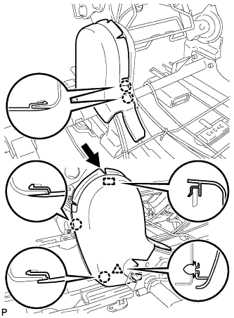 |
Переместите молдинг в направлении, указанном на рисунке стрелкой, чтобы ввести в зацепление направляющую.
Введите в зацепление 4 захвата и фиксатор, чтобы установить молдинг.
| 13. УСТАНОВИТЕ ЛЕВУЮ ВНУТРЕННЮЮ КРЫШКУ РЕГУЛЯТОРА НАКЛОНА |
Введите в зацепление 2 захвата, чтобы установить крышку.
Заверните 2 винта.
| 14. УСТАНОВИТЕ ВНУТРЕННЮЮ ОТКИДНУЮ КРЫШКУ ЛЕВОГО ЗАДНЕГО СИДЕНЬЯ |
Введите в зацепление направляющую, установите накладку и закрепите ее 2 винтами.
| 15. УСТАНОВИТЕ КРАЕВОЕ УКРЕПЛЕНИЕ СПИНКИ ЗАДНЕГО СИДЕНЬЯ |
Установите защитный элемент на каркас спинки сиденья.
| 16. УСТАНОВИТЕ ОБИВКУ СПИНКИ РАЗДЕЛЬНОГО ЗАДНЕГО СИДЕНЬЯ |
| 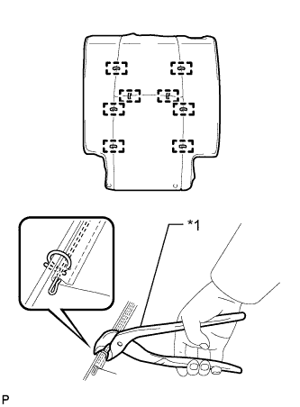 |
Установите обивку на подушку спинки сиденья и закрепите ее новыми витковыми пружинами, используя щипцы для витковых пружин.
| *1 | Щипцы для витковых пружин |
| 17. УСТАНОВИТЕ ОБИВКУ СПИНКИ СИДЕНЬЯ ВМЕСТЕ С ПОДУШКОЙ |
| 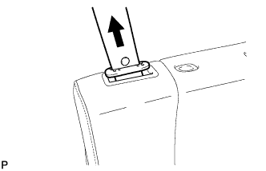 |
Подсоедините ремень безопасности к обивке спинки сиденья с подушкой.
| 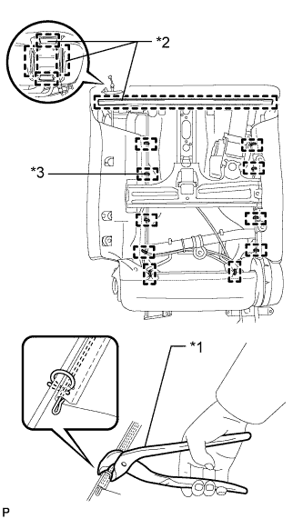 |
Введите в зацепление крепления.
| *1 | Щипцы для витковых пружин |
| *2 | Крюк |
| *3 | Витковая пружина |
Используя щипцы для витковых пружин, закрепите обивку спинки сиденья с подушкой новыми витковыми пружинами.
| 18. УСТАНОВИТЕ ДЕРЖАТЕЛЬ ПОДГОЛОВНИКА ЗАДНЕГО СИДЕНЬЯ № 1 В СБОРЕ |
Введите в зацепление 4 захвата, чтобы закрепить 2 держателя.
| 19. УСТАНОВИТЕ ПАНЕЛЬ ПОКРЫТИЯ СПИНКИ ЛЕВОГО ЗАДНЕГО СИДЕНЬЯ В СБОРЕ |
Введите в зацепление 7 фиксаторов, чтобы установить коврик.
| 20. УСТАНОВИТЕ ОБИВКУ СПИНКИ ЗАДНЕГО СИДЕНЬЯ |
Введите в зацепление 4 захвата, чтобы установить крышку.
| 21. УСТАНОВИТЕ КРЫШКУ ПЛЕЧЕВОГО КРЕПЛЕНИЯ РЕМНЯ ЗАДНЕГО СИДЕНЬЯ |
Подсоедините ремень безопасности к крышке.
| 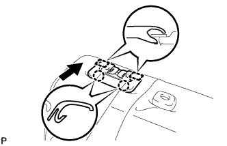 |
Закрепите 2 направляющие и 2 захвата, чтобы установить накладку.
| 22. УСТАНОВИТЕ КРЫШКУ КРЕПЛЕНИЯ РЕМНЯ БЕЗОПАСНОСТИ |
| 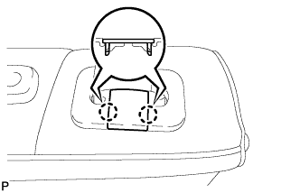 |
Введите в зацепление 2 захвата для установки колпачка.
| 23. УСТАНОВИТЕ РЫЧАГ ЗАМКА ЛЕВОГО ЗАДНЕГО СИДЕНЬЯ В СБОРЕ |
| 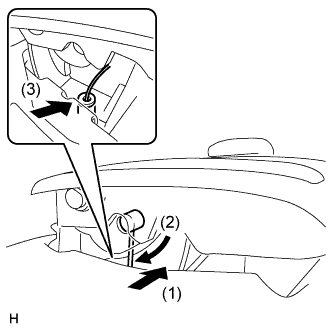 |
Подсоедините трос в порядке, показанном на рисунке, и установите рычаг.
Вверните 2 винта.
| 24. УСТАНОВИТЕ КОЛПАЧОК ЛЕВОЙ РУЧКИ РЕГУЛЯТОРА НАКЛОНА |
| 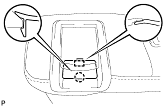 |
Введите в зацепление направляющую и захват, чтобы установить колпачок.
| 25. УСТАНОВИТЕ ЗАМОК РЕМНЯ БЕЗОПАСНОСТИ ЛЕВОГО ЗАДНЕГО СИДЕНЬЯ № 1 В СБОРЕ |
| 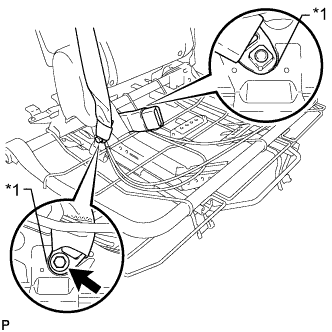 |
Установите замок ремня безопасности и подсоедините центральный ремень безопасности с помощью болта.
| *1 | Выступающая часть |
| 26. УСТАНОВИТЕ ОБИВКУ СПИНКИ ЦЕНТРАЛЬНОГО СИДЕНЬЯ № 2 |
Установите крышку и закрепите ее 3 винтами.
| 27. УСТАНОВИТЕ КРЫШКУ КРЮКА ДЛЯ ОДЕЖДЫ |
| 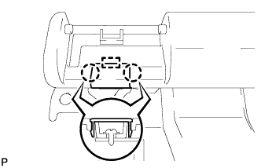 |
Введите в зацепление направляющую и 2 захвата, чтобы закрепить крышку.
| 28. УСТАНОВИТЕ АРМИРУЮЩУЮ ПРОВОЛОКУ СПИНКИ СКЛАДЫВАЮЩЕГОСЯ СИДЕНЬЯ |
Введите в зацепление 2 захвата, чтобы установить жгут проводов.
| 29. УСТАНОВИТЕ РЫЧАГ ЗАМКА ЗАДНЕГО СИДЕНЬЯ № 1 |
| 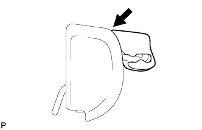 |
Установите рычаг, как показано на рисунке.
| 30. УСТАНОВИТЕ ЛЕВЫЙ ЗАМОК ЗАДНЕГО СИДЕНЬЯ В СБОРЕ |
Установите замок и закрепите его 2 болтами.
Введите в зацепление зажим, чтобы подсоединить жгут проводов.
| 31. УСТАНОВИТЕ ОБИВКУ СПИНКИ СИДЕНЬЯ № 1 |
| 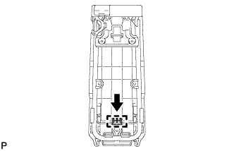 |
Закрепите направляющую.
| 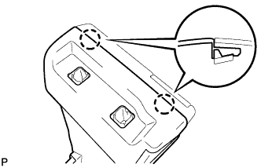 |
Введите в зацепление 2 захватов, чтобы установить крышку.
| 32. УСТАНОВИТЕ ДЕРЖАТЕЛЬ ПОДГОЛОВНИКА ЗАДНЕГО СИДЕНЬЯ |
Введите в зацепление 4 захвата, чтобы закрепить 2 держателя.
| 33. УСТАНОВИТЕ КРЫШКУ ПОДЛОКОТНИКА СИДЕНЬЯ |
| 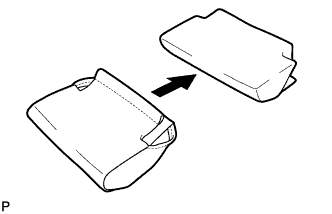 |
Установите обивку на подушку.
| 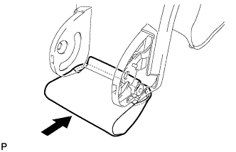 |
Установите обивку с подушкой.
| 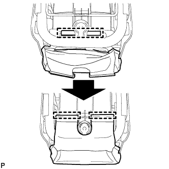 |
Введите в зацепление крепления.
| 34. УСТАНОВИТЕ ПАНЕЛЬ СПИНКИ ЗАДНЕГО СИДЕНЬЯ В СБОРЕ |
Введите в зацепление 5 фиксаторов, чтобы установить панель.
| 35. УСТАНОВИТЕ КРЫШКУ ЗАМКА СПИНКИ ЗАДНЕГО СИДЕНЬЯ |
| 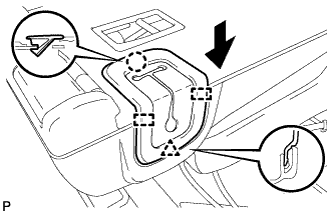 |
Переместите крышку в направлении, указанном на рисунке стрелкой, чтобы ввести в зацепление фиксатор и 2 направляющих.
Введите в зацепление захват.
| 36. УСТАНОВИТЕ ОБИВКУ СПИНКИ ЗАДНЕГО СИДЕНЬЯ |
Введите в зацепление 4 захвата, чтобы закрепить обивку.
| 37. УСТАНОВИТЕ ПОДСТАВКУ ДЛЯ ЧАШКИ ЦЕНТРАЛЬНОГО ПОДЛОКОТНИКА ЗАДНЕГО СИДЕНЬЯ В СБОРЕ |
| 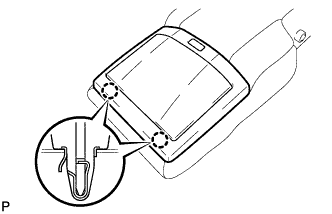 |
Установите подставку для чашки и закрепите ее 2 фиксаторами.
Вверните 2 винта.
| 38. УСТАНОВИТЕ ПОДЛОКОТНИК ЗАДНЕГО ЦЕНТРАЛЬНОГО СИДЕНЬЯ В СБОРЕ |
| 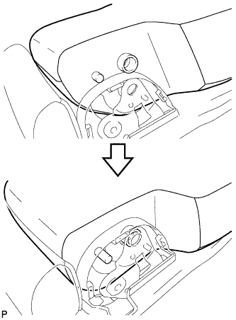 |
Установите подлокотник, как показано на рисунке.
Установите опору подлокотника и закрепите ее гайкой.
С помощью торцевого ключа "TORX" T45 закрепите подлокотник и 2 втулки 2 болтами "TORX".
| 39. УСТАНОВИТЕ НАКЛАДКУ ОПОРЫ СПИНКИ ПРАВОГО ЗАДНЕГО СИДЕНЬЯ |
Присоедините направляющую и 3 захвата, чтобы закрепить щиток.
| 40. УСТАНОВИТЕ НАКЛАДКУ ОПОРЫ СПИНКИ ЛЕВОГО ЗАДНЕГО СИДЕНЬЯ |
Присоедините направляющую и 3 захвата, чтобы закрепить щиток.
| 41. УСТАНОВИТЕ ОТКИДНОЙ КРОНШТЕЙН ПРАВОГО ЗАДНЕГО СИДЕНЬЯ |
С помощью торцевого ключа с головкой "TORX" T45 закрепите кронштейн и втулку болтом "TORX".
| 42. УСТАНОВИТЕ ОТКИДНОЙ КРОНШТЕЙН ЛЕВОГО ЗАДНЕГО СИДЕНЬЯ |
С помощью торцевого ключа с головкой "TORX" T45 закрепите кронштейн и втулку болтом "TORX".
| 43. УСТАНОВИТЕ КРЫШКУ ПЕТЛИ ЦЕНТРАЛЬНОГО СИДЕНЬЯ |
| 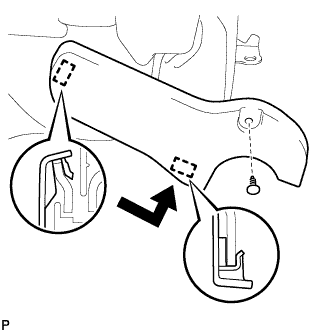 |
Введите в зацепление 2 направляющих и закрепите крышку фиксатором.
| 44. УСТАНОВИТЕ ЦЕНТРАЛЬНЫЙ ПОДГОЛОВНИК ЗАДНЕГО СИДЕНЬЯ В СБОРЕ |
Установите подголовник.
| 45. УСТАНОВИТЕ СПИНКУ ЦЕНТРАЛЬНОГО СИДЕНЬЯ В СБОРЕ |
Закрепите спинку центрального сиденья 2 болтами.
| 46. УСТАНОВИТЕ КРАЕВОЕ УКРЕПЛЕНИЕ ПОДУШКИ ЗАДНЕГО СИДЕНЬЯ |
Установите защитный элемент на пружину подушки.
| 47. УСТАНОВИТЕ ОБИВКУ ПОДУШКИ РАЗДЕЛЬНОГО ЗАДНЕГО СИДЕНЬЯ |
| 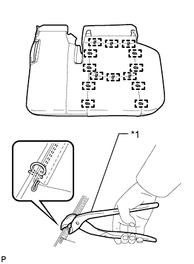 |
Установите обивку подушки сиденья на подушку сиденья и закрепите ее новыми витковыми пружинами, используя щипцы для витковых пружин.
| *1 | Щипцы для витковых пружин |
| 48. УСТАНОВИТЕ ЭЛЕМЕНТ ЗАЩИТЫ ЗАДНЕГО СИДЕНЬЯ № 2 |
Установите 2 защитных элемента на подушку.
| 49. УСТАНОВИТЕ ОБИВКУ ПОДУШКИ СИДЕНЬЯ ВМЕСТЕ С ПОДУШКОЙ |
| 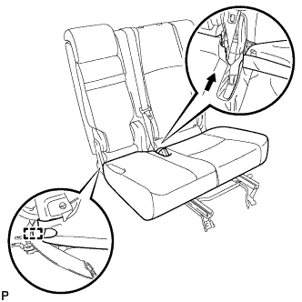 |
Введите в зацепление крюк.
| 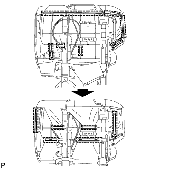 |
Подсоедините крепления, чтобы закрепить обивку подушки сиденья вместе с подушкой.
| 50. УСТАНОВИТЕ КРЫШКУ ЗАЩЕЛКИ ЗАМКА СПИНКИ ЛЕВОГО ЗАДНЕГО СИДЕНЬЯ |
Установите крышку и введите в зацепление 3 фиксатора.
| 51. УСТАНОВИТЕ МОЛДИНГ ПОДУШКИ ЛЕВОГО ЗАДНЕГО СИДЕНЬЯ |
| 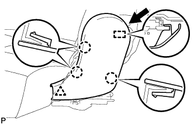 |
Переместите молдинг в направлении, указанном на рисунке стрелкой, чтобы ввести в зацепление направляющую.
Введите в зацепление 3 захвата и фиксатор, чтобы установить молдинг.
| 52. УСТАНОВИТЕ ЛЕВУЮ КРЫШКУ ПЕТЛИ ЦЕНТРАЛЬНОГО СИДЕНЬЯ |
| 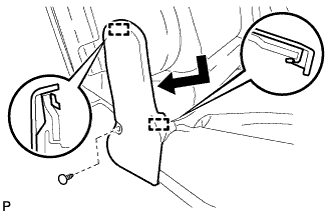 |
Введите в зацепление 2 направляющих и закрепите крышку фиксатором.
| 53. УСТАНОВИТЕ РУЧКУ ОТПУСКАНИЯ РЕГУЛЯТОРА НАКЛОНА ЛЕВОГО СИДЕНЬЯ |
Установите рукоятку и закрепите ее 3 винтами.
| 54. УСТАНОВИТЕ ВЕРХНЮЮ ОТКИДНУЮ КРЫШКУ ЛЕВОГО ЗАДНЕГО СИДЕНЬЯ |
| 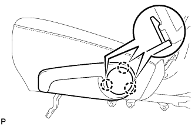 |
Введите в зацепление 3 захвата, чтобы установить крышку.